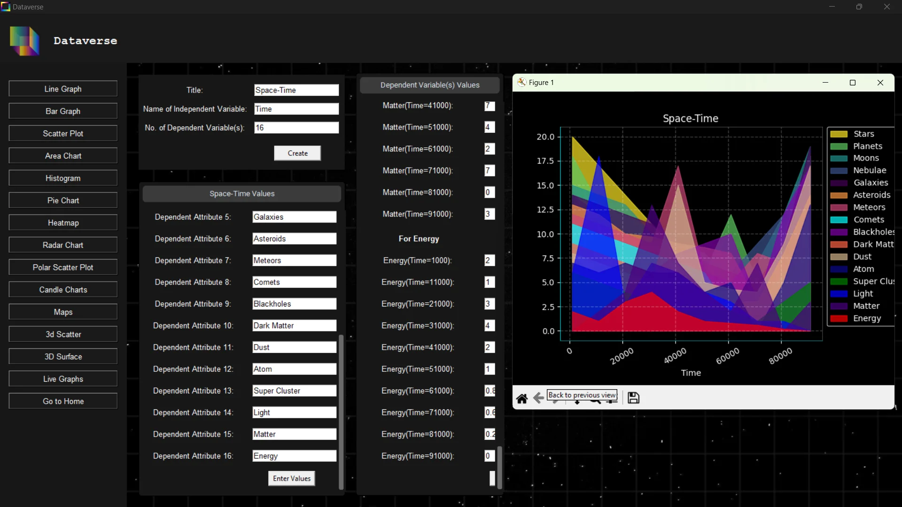
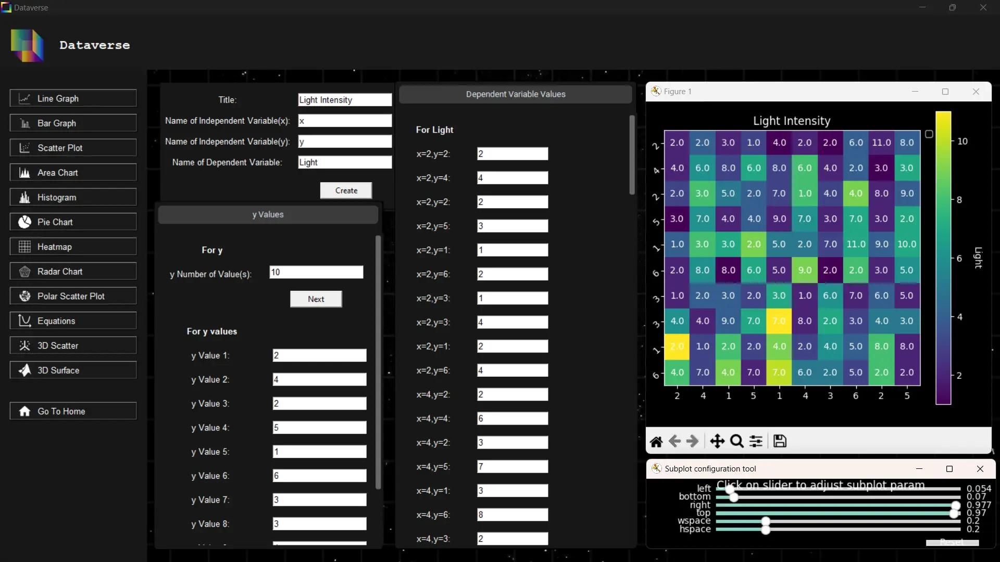
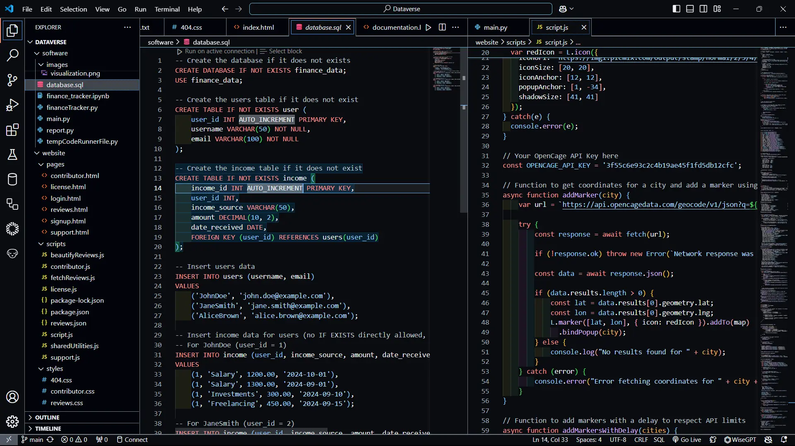

Open-Source Data Visualization.
A simple, graphical interface for generating Matplotlib charts and managing datasets without writing code.
| Version | OS | Specifications | Action |
|---|---|---|---|
| Latest Release | Windows | Win 10/11, x64, No Python Req. | Dataverse.exe |
| Source Code | macOS / Linux | Python 3.8+, pip | View Repo |



Built for scale and insights.
Visualize Data
Easily transform raw data into visually appealing charts. Supports advanced techniques like heatmaps, radar charts and 3D surface plots.
Export & Store
Download the generated plots in high quality or save the data safely with local encryption for future analysis and usage.